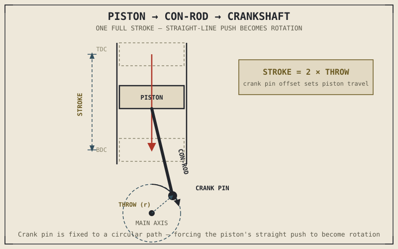

Between the moment combustion pressure slams into the top of a piston and the moment that same energy shows up as smooth, continuous rotation at the crankshaft, three components have to do something that sounds almost too simple to matter: they change the direction the force is pointing. Straight-line push in, spinning motion out. It's the least glamorous-sounding job in the entire engine, and it's also the one piece of machinery in the whole assembly that has to survive a violent, repeated hammering thousands of times a minute for the engine's entire working life.
Chapter 2.4 left off with combustion pressure landing squarely on the piston at the ideal moment. This chapter picks up exactly there and follows that pressure the rest of the way — through the piston, through the connecting rod, and into the crankshaft — because "the piston pushes, the crank spins" turns out to hide a surprising amount of engineering.
The Chain: Piston, Con-Rod, Crankshaft
The piston is the direct recipient of combustion pressure, and its only job at this stage is to be pushed down the cylinder in a straight line, sealed tightly enough by its piston rings that expanding gas can't leak past it and go to waste. That straight-line motion connects to a connecting rod — commonly called a con-rod — through a pin at the top of the piston. The con-rod's other end attaches not to a fixed point but to a crank pin: a section of the crankshaft that's offset from the crankshaft's main rotating axis.
That offset is the whole trick. As the piston pushes the con-rod down, the con-rod pushes on this offset crank pin, and because the crank pin can only travel in a circle around the crankshaft's main axis, the straight-line push gets converted into rotation almost incidentally — a direct mechanical consequence of the crank pin simply not being allowed to move anywhere except in that circle. This is also, quietly, where the "stroke" from Chapter 1.5 and Chapter 2.2 actually gets its length: the distance from TDC to BDC is exactly twice the distance between the crank pin and the crankshaft's main axis, a measurement called the crank throw. A longer throw means a longer stroke, a longer piston travel distance, and a different set of trade-offs Chapter 2.8 covers when it returns to bore and stroke properly.

A cross-section showing the piston, con-rod, and crankshaft through one full stroke — piston travelling straight down, con-rod angling as it follows the crank pin, crank pin tracing a circle around the main axis, stroke length marked as twice the crank throw.
The Piston Never Actually Moves at a Steady Speed
It's tempting to picture the piston moving smoothly down the cylinder and smoothly back up, but the geometry above makes that impossible. At TDC and BDC, the piston's direction reverses completely, which means its speed is instantaneously zero at both ends of every stroke, and its acceleration at those points is at its absolute maximum, since it has to go from a dead stop to its highest speed of the whole stroke in a very short span of crank rotation.
This has two consequences worth carrying forward. First, because the con-rod is a fixed length swinging around the crank pin's circular path while the piston moves in a straight line, the rod is angled for almost the entire stroke rather than staying perfectly vertical — and that angle pushes the piston sideways against the cylinder wall with real force, called piston side thrust, which is exactly why cylinders and pistons need careful lubrication and precise clearances, a topic Chapter 2.16 takes on directly. Second, this constant acceleration and deceleration of a heavy metal piston, repeated thousands of times a minute, is a genuine source of vibration — and multiplying that single piston's motion across two, three, or four cylinders, each reaching TDC and BDC at different points in the cycle, is exactly the problem Chapter 2.17 exists to solve.
A piston doesn't glide up and down the cylinder. It's violently accelerated from a standstill twice on every single stroke — and everything from cylinder wear to engine vibration eventually traces back to that fact.
The Crankshaft as a Flywheel: Carrying the Other Three Strokes
Chapter 2.1 and Chapter 2.2 both made a point of stressing that only one of an engine's four strokes actually delivers power — the other three are preparation and cleanup, contributing nothing to rotation on their own. That raises an obvious question this chapter is finally positioned to answer: if three-quarters of the cycle produces no power stroke, what keeps the crankshaft turning through those three strokes instead of stalling?
The answer is the crankshaft's own rotating mass, often assisted by an additional flywheel attached directly to it. During the power stroke, the crankshaft doesn't just transmit rotation outward to the transmission — it also speeds up slightly, storing some of that stroke's energy as momentum in its own spinning mass. Through the following intake, compression, and exhaust strokes, none of which add energy, that stored momentum is what keeps the crankshaft turning smoothly instead of jerking to a halt after every power stroke, carrying the whole assembly through to the next ignition event. A crankshaft-and-flywheel assembly is, in this very literal sense, an energy reservoir bridging the gaps in a fundamentally intermittent power delivery.
How much rotating mass that reservoir has is a genuine design choice, not a fixed requirement, and it changes how an engine feels far more than its spec sheet suggests. A heavier flywheel stores more energy between power strokes, producing smoother, more consistent rotation and making an engine harder to stall at low RPM — but that same stored energy resists rapid changes in engine speed, so the engine also revs and decelerates more slowly, feeling comparatively lazy in response to the throttle. A lighter flywheel does the opposite: it lets the engine change speed quickly, revving eagerly and feeling sharp and responsive, at the cost of smoothness and low-RPM stability, since there's less stored momentum to carry the crankshaft through the non-power strokes.
A Common Misconception, Cleared Up Early
Because lighter components are so often framed as a straightforward performance upgrade elsewhere on a motorcycle, it's easy to assume a lighter flywheel is simply better — quicker revving sounds like an unambiguous win. As the previous section should make clear, this is exactly the kind of raw-number thinking Chapter 1.6 warned against: flywheel weight is a trade-off between responsiveness and smoothness, not a scale with "better" at one end. A lightened flywheel genuinely suits an engine meant to be revved hard and changed in speed constantly, like a racing engine, and genuinely disadvantages an engine meant to pull smoothly and predictably from low RPM, like a touring or commuting engine. Neither flywheel is correct in the abstract. Each is correct for a specific job.
Where This Leads
This chapter followed combustion pressure all the way from the piston crown to the crankshaft's stored rotational momentum — the entire mechanical answer to how a push becomes a spin. What it hasn't yet covered is the other end of the cylinder: how air and exhaust actually get in and out through valves, and what controls exactly when those valves open. Chapter 2.6 turns to the top end next — the cylinder head, valves, and combustion chamber that sit above everything this chapter just described.
Key Concepts to Remember
- The piston, connecting rod, and crankshaft form a mechanical chain that converts the piston's straight-line push into the crankshaft's rotation, using the crank pin's fixed circular path as the mechanism that forces the conversion.
- Stroke length, introduced back in Chapter 1.5, is exactly twice the crank throw — the offset distance between the crank pin and the crankshaft's main axis.
- The piston's speed is zero at TDC and BDC and reaches maximum acceleration at those same points, producing both cylinder-wall side thrust and a genuine source of engine vibration.
- The crankshaft's rotating mass — its flywheel effect — stores energy from the power stroke and releases it through the other three, non-power-producing strokes, keeping the engine from stalling between ignition events.
- Flywheel weight is a deliberate trade-off, not a simple upgrade: heavier flywheels smooth delivery and resist stalling, while lighter flywheels rev and respond faster at the cost of smoothness.
Cross-References
| ← Ch. 2.4 | Delivered the combustion pressure this chapter follows through the piston, con-rod, and crankshaft. |
| ← Ch. 1.5 | Introduced "stroke" as a term; this chapter shows exactly what mechanical measurement — the crank throw — actually defines it. |
| ← Ch. 2.1 | Established that only one of four strokes delivers power; this chapter explains how the crankshaft's own momentum carries the engine through the other three. |
| → Ch. 2.6 | The top end — cylinder head, valves, and combustion chamber sitting above everything described here. |
| → Ch. 2.16 | Lubrication, building directly on the piston side-thrust and bearing loads introduced here. |
| → Ch. 2.17 | Engine balance, building directly on the vibration introduced here. |